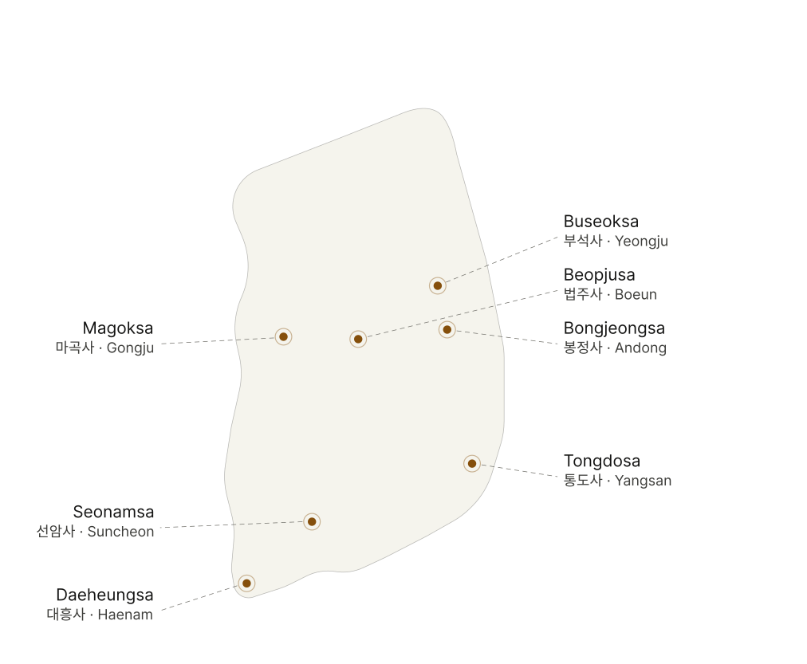

01 / 07
Buseoksa
Yeongju, Gyeongsangbuk-do
A northern stop in the Sansa group, Buseoksa introduces the route as a mountain monastery where architecture, worship, and landscape are read together.



01 / 07
Yeongju, Gyeongsangbuk-do
A northern stop in the Sansa group, Buseoksa introduces the route as a mountain monastery where architecture, worship, and landscape are read together.
For future temple travelers
The seven temples share a Korean spatial pattern: a madang, or open courtyard, arranged with buildings for worship, gathering, learning, and monastic living. For travelers, that means the experience is less about one landmark and more about entering a working rhythm of mountain, gate, hall, and courtyard.
Check each temple's visitor hours, stay quiet around active worship, and leave time for the approach from the nearest town.
Look for the courtyard layout, pavilions, main halls, lecture spaces, dormitories, painted wood, and the way buildings meet the mountain slope.
These temples are spread across several provinces, so treat SANSA as a route to plan over multiple days rather than a single stop.